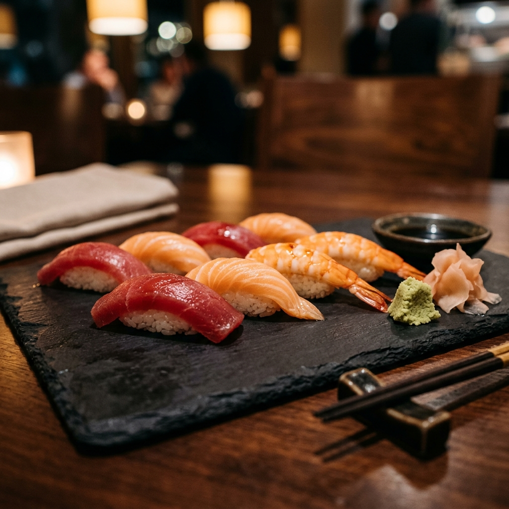

標題
副標題
學習日語的第一步！點選下方卡片切換**平假名/片假名**，**滑鼠懸停或點選卡片**即可即時聆聽日籍語音發音。
通過測驗來強化五十音記憶！內置 Web Audio 音效，答對累積連擊（Combo）獲取高分！
請選擇您要挑戰的範疇：
挑戰開始後，會隨機顯示假名字卡，請點選正確的羅馬拼音。
這個假名的羅馬拼音（讀音）是？
為您的日本旅程做足準備！精選日常、用餐、交通、購物實用會話，**點選語音圖示即可即時聆聽語音播放**。
日本傳統文化體現了極致的職人細節與自然哲理，點選卡片查看深度的圖文對照指南。
體現「和敬清寂」精神的傳統藝術，從泡茶到品茶皆是哲學修行。
深入閱讀充滿活力的神明慶典，伴隨震撼太鼓、華麗神轎與絢爛花火。
深入閱讀火山國度的天然恩賜，獨特的泡湯禮儀與放鬆身心的極致享受。
深入閱讀從古典優雅的千年京都、繁華霓虹的東京大都會，到精緻握壽司與靈魂拉麵，感受多姿多彩的日式風味。
穿梭在清水寺與伏見稻荷大社的鳥居中，感受時光凝結的典雅。
探索地標推薦結合世界頂尖科技與潮流次文化，體驗不夜城新與舊的激烈碰撞。
探索地標推薦
新鮮海洋漁獲與溫潤醋飯的完美結合，了解握壽司的講究吃法。
了解壽司種類與禮儀濃郁豚骨、清澈醬油、鹽味與味噌四大湯頭，探索獨樹一格的拉麵文化。
了解拉麵流派